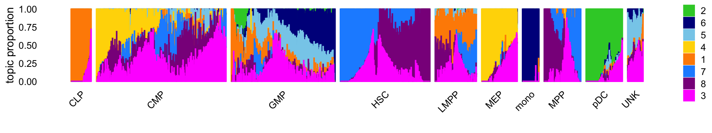

Last updated: 2022-05-03
Checks: 7 0
Knit directory: scATACseq-topics/
This reproducible R Markdown analysis was created with workflowr (version 1.7.0). The Checks tab describes the reproducibility checks that were applied when the results were created. The Past versions tab lists the development history.
Great! Since the R Markdown file has been committed to the Git repository, you know the exact version of the code that produced these results.
Great job! The global environment was empty. Objects defined in the global environment can affect the analysis in your R Markdown file in unknown ways. For reproduciblity it’s best to always run the code in an empty environment.
The command set.seed(20200729) was run prior to running the code in the R Markdown file. Setting a seed ensures that any results that rely on randomness, e.g. subsampling or permutations, are reproducible.
Great job! Recording the operating system, R version, and package versions is critical for reproducibility.
Nice! There were no cached chunks for this analysis, so you can be confident that you successfully produced the results during this run.
Great job! Using relative paths to the files within your workflowr project makes it easier to run your code on other machines.
Great! You are using Git for version control. Tracking code development and connecting the code version to the results is critical for reproducibility.
The results in this page were generated with repository version 397ee9a. See the Past versions tab to see a history of the changes made to the R Markdown and HTML files.
Note that you need to be careful to ensure that all relevant files for the analysis have been committed to Git prior to generating the results (you can use wflow_publish or wflow_git_commit). workflowr only checks the R Markdown file, but you know if there are other scripts or data files that it depends on. Below is the status of the Git repository when the results were generated:
Ignored files:
Ignored: .DS_Store
Ignored: data/.DS_Store
Ignored: data/Buenrostro_2018/
Ignored: output/Buenrostro_2018/
Untracked files:
Untracked: analysis/fit-Buenrostro2018-binarized-scd-ex-k=10.rds
Untracked: data/Buenrostro_2018_binarized.RData
Untracked: scripts/fit-buenrostro-2018-k=8.rds
Untracked: scripts/structure_plot_buenrostro2018.png
Note that any generated files, e.g. HTML, png, CSS, etc., are not included in this status report because it is ok for generated content to have uncommitted changes.
These are the previous versions of the repository in which changes were made to the R Markdown (analysis/buenrostro2018_k8.Rmd) and HTML (docs/buenrostro2018_k8.html) files. If you’ve configured a remote Git repository (see ?wflow_git_remote), click on the hyperlinks in the table below to view the files as they were in that past version.
| File | Version | Author | Date | Message |
|---|---|---|---|---|
| Rmd | 397ee9a | Peter Carbonetto | 2022-05-03 | workflowr::wflow_publish(“buenrostro2018_k8.Rmd”, verbose = TRUE) |
| Rmd | fdd3b37 | Peter Carbonetto | 2022-05-03 | Working on new buenrostro2018_k8 analysis. |
| Rmd | bb54994 | Peter Carbonetto | 2022-05-03 | workflowr::wflow_publish(“index.Rmd”) |
Add text here.
Load the packages used in the analysis.
library(Matrix)
library(fastTopics)
library(ggplot2)
library(cowplot)Load the count data and the \(k = 8\) multinomial topic model fit to these data:
load("data/Buenrostro_2018/processed_data/Buenrostro_2018_binarized.RData")
fit <- readRDS(
file.path("output/Buenrostro_2018/binarized/filtered_peaks",
"fit-Buenrostro2018-binarized-filtered-scd-ex-k=8.rds"))$fit
fit <- poisson2multinom(fit)Visualize the structure identified in the FACS cell populations using a Structure plot:
set.seed(1)
celltypes = factor(samples$label)
topic_colors <- c("darkorange","limegreen","magenta","gold","skyblue",
"darkblue","dodgerblue","darkmagenta")
custom_embed_method <- function (fit, ...) {
y0 <- pca_from_topics(fit,dims = 1)
return(tsne_from_topics(fit,dims = 1,Y_init = matrix(y0)))
}
structure_plot(fit,grouping = celltypes,perplexity = 20,n = Inf,gap = 20,
verbose = FALSE,colors = topic_colors,
embed_method = custom_embed_method)
# Perplexity automatically changed to 24 because the original setting of 100 was too large for the number of samples (78)
# Perplexity automatically changed to 52 because the original setting of 100 was too large for the number of samples (160)
# Perplexity automatically changed to 44 because the original setting of 100 was too large for the number of samples (138)
# Perplexity automatically changed to 20 because the original setting of 100 was too large for the number of samples (64)
# Perplexity automatically changed to 46 because the original setting of 100 was too large for the number of samples (142)
# Perplexity automatically changed to 45 because the original setting of 100 was too large for the number of samples (141)
# Perplexity automatically changed to 18 because the original setting of 100 was too large for the number of samples (60)
# Read the 78 x 8 data matrix successfully!
# Using user supplied starting positions
# OpenMP is working. 1 threads.
# Using no_dims = 1, perplexity = 24.000000, and theta = 0.100000
# Computing input similarities...
# Building tree...
# Done in 0.00 seconds (sparsity = 0.978961)!
# Learning embedding...
# Iteration 50: error is 0.074802 (50 iterations in 0.00 seconds)
# Iteration 100: error is 0.068890 (50 iterations in 0.00 seconds)
# Iteration 150: error is 0.068888 (50 iterations in 0.00 seconds)
# Iteration 200: error is 0.068888 (50 iterations in 0.00 seconds)
# Iteration 250: error is 0.068887 (50 iterations in 0.00 seconds)
# Iteration 300: error is 0.068887 (50 iterations in 0.00 seconds)
# Iteration 350: error is 0.068888 (50 iterations in 0.00 seconds)
# Iteration 400: error is 0.068888 (50 iterations in 0.00 seconds)
# Iteration 450: error is 0.068888 (50 iterations in 0.00 seconds)
# Iteration 500: error is 0.068887 (50 iterations in 0.00 seconds)
# Iteration 550: error is 0.068888 (50 iterations in 0.00 seconds)
# Iteration 600: error is 0.068887 (50 iterations in 0.00 seconds)
# Iteration 650: error is 0.068887 (50 iterations in 0.00 seconds)
# Iteration 700: error is 0.068883 (50 iterations in 0.00 seconds)
# Iteration 750: error is 0.068888 (50 iterations in 0.00 seconds)
# Iteration 800: error is 0.068888 (50 iterations in 0.00 seconds)
# Iteration 850: error is 0.068883 (50 iterations in 0.00 seconds)
# Iteration 900: error is 0.068876 (50 iterations in 0.00 seconds)
# Iteration 950: error is 0.068888 (50 iterations in 0.00 seconds)
# Iteration 1000: error is 0.068887 (50 iterations in 0.00 seconds)
# Fitting performed in 0.08 seconds.
# Read the 502 x 8 data matrix successfully!
# Using user supplied starting positions
# OpenMP is working. 1 threads.
# Using no_dims = 1, perplexity = 100.000000, and theta = 0.100000
# Computing input similarities...
# Building tree...
# Done in 0.14 seconds (sparsity = 0.720957)!
# Learning embedding...
# Iteration 50: error is 0.748709 (50 iterations in 0.06 seconds)
# Iteration 100: error is 0.746577 (50 iterations in 0.06 seconds)
# Iteration 150: error is 0.746575 (50 iterations in 0.06 seconds)
# Iteration 200: error is 0.746575 (50 iterations in 0.06 seconds)
# Iteration 250: error is 0.746574 (50 iterations in 0.06 seconds)
# Iteration 300: error is 0.746575 (50 iterations in 0.06 seconds)
# Iteration 350: error is 0.746574 (50 iterations in 0.06 seconds)
# Iteration 400: error is 0.746574 (50 iterations in 0.06 seconds)
# Iteration 450: error is 0.746574 (50 iterations in 0.06 seconds)
# Iteration 500: error is 0.746575 (50 iterations in 0.06 seconds)
# Iteration 550: error is 0.746574 (50 iterations in 0.06 seconds)
# Iteration 600: error is 0.746574 (50 iterations in 0.06 seconds)
# Iteration 650: error is 0.746574 (50 iterations in 0.06 seconds)
# Iteration 700: error is 0.746574 (50 iterations in 0.06 seconds)
# Iteration 750: error is 0.746575 (50 iterations in 0.06 seconds)
# Iteration 800: error is 0.746574 (50 iterations in 0.06 seconds)
# Iteration 850: error is 0.746574 (50 iterations in 0.06 seconds)
# Iteration 900: error is 0.746574 (50 iterations in 0.06 seconds)
# Iteration 950: error is 0.746575 (50 iterations in 0.06 seconds)
# Iteration 1000: error is 0.746574 (50 iterations in 0.06 seconds)
# Fitting performed in 1.13 seconds.
# Read the 402 x 8 data matrix successfully!
# Using user supplied starting positions
# OpenMP is working. 1 threads.
# Using no_dims = 1, perplexity = 100.000000, and theta = 0.100000
# Computing input similarities...
# Building tree...
# Done in 0.11 seconds (sparsity = 0.892107)!
# Learning embedding...
# Iteration 50: error is 0.579402 (50 iterations in 0.05 seconds)
# Iteration 100: error is 0.579353 (50 iterations in 0.05 seconds)
# Iteration 150: error is 0.579348 (50 iterations in 0.05 seconds)
# Iteration 200: error is 0.579350 (50 iterations in 0.05 seconds)
# Iteration 250: error is 0.579348 (50 iterations in 0.05 seconds)
# Iteration 300: error is 0.579350 (50 iterations in 0.05 seconds)
# Iteration 350: error is 0.579348 (50 iterations in 0.05 seconds)
# Iteration 400: error is 0.579348 (50 iterations in 0.05 seconds)
# Iteration 450: error is 0.579349 (50 iterations in 0.05 seconds)
# Iteration 500: error is 0.579349 (50 iterations in 0.05 seconds)
# Iteration 550: error is 0.579349 (50 iterations in 0.05 seconds)
# Iteration 600: error is 0.579349 (50 iterations in 0.05 seconds)
# Iteration 650: error is 0.579349 (50 iterations in 0.05 seconds)
# Iteration 700: error is 0.579348 (50 iterations in 0.05 seconds)
# Iteration 750: error is 0.579348 (50 iterations in 0.05 seconds)
# Iteration 800: error is 0.579348 (50 iterations in 0.05 seconds)
# Iteration 850: error is 0.579348 (50 iterations in 0.05 seconds)
# Iteration 900: error is 0.579348 (50 iterations in 0.05 seconds)
# Iteration 950: error is 0.579348 (50 iterations in 0.05 seconds)
# Iteration 1000: error is 0.579348 (50 iterations in 0.05 seconds)
# Fitting performed in 0.97 seconds.
# Read the 347 x 8 data matrix successfully!
# Using user supplied starting positions
# OpenMP is working. 1 threads.
# Using no_dims = 1, perplexity = 100.000000, and theta = 0.100000
# Computing input similarities...
# Building tree...
# Done in 0.09 seconds (sparsity = 0.961971)!
# Learning embedding...
# Iteration 50: error is 0.212643 (50 iterations in 0.04 seconds)
# Iteration 100: error is 0.212155 (50 iterations in 0.04 seconds)
# Iteration 150: error is 0.212154 (50 iterations in 0.04 seconds)
# Iteration 200: error is 0.212158 (50 iterations in 0.04 seconds)
# Iteration 250: error is 0.212155 (50 iterations in 0.04 seconds)
# Iteration 300: error is 0.212155 (50 iterations in 0.04 seconds)
# Iteration 350: error is 0.212154 (50 iterations in 0.04 seconds)
# Iteration 400: error is 0.212155 (50 iterations in 0.04 seconds)
# Iteration 450: error is 0.212155 (50 iterations in 0.04 seconds)
# Iteration 500: error is 0.212155 (50 iterations in 0.04 seconds)
# Iteration 550: error is 0.212155 (50 iterations in 0.04 seconds)
# Iteration 600: error is 0.212158 (50 iterations in 0.04 seconds)
# Iteration 650: error is 0.212157 (50 iterations in 0.04 seconds)
# Iteration 700: error is 0.212158 (50 iterations in 0.04 seconds)
# Iteration 750: error is 0.212155 (50 iterations in 0.04 seconds)
# Iteration 800: error is 0.212155 (50 iterations in 0.04 seconds)
# Iteration 850: error is 0.212155 (50 iterations in 0.04 seconds)
# Iteration 900: error is 0.212158 (50 iterations in 0.04 seconds)
# Iteration 950: error is 0.212155 (50 iterations in 0.04 seconds)
# Iteration 1000: error is 0.212158 (50 iterations in 0.04 seconds)
# Fitting performed in 0.75 seconds.
# Read the 160 x 8 data matrix successfully!
# Using user supplied starting positions
# OpenMP is working. 1 threads.
# Using no_dims = 1, perplexity = 52.000000, and theta = 0.100000
# Computing input similarities...
# Building tree...
# Done in 0.02 seconds (sparsity = 0.992891)!
# Learning embedding...
# Iteration 50: error is 0.307744 (50 iterations in 0.01 seconds)
# Iteration 100: error is 0.306937 (50 iterations in 0.01 seconds)
# Iteration 150: error is 0.306949 (50 iterations in 0.01 seconds)
# Iteration 200: error is 0.306951 (50 iterations in 0.01 seconds)
# Iteration 250: error is 0.306954 (50 iterations in 0.01 seconds)
# Iteration 300: error is 0.306950 (50 iterations in 0.01 seconds)
# Iteration 350: error is 0.306949 (50 iterations in 0.01 seconds)
# Iteration 400: error is 0.306950 (50 iterations in 0.01 seconds)
# Iteration 450: error is 0.306950 (50 iterations in 0.01 seconds)
# Iteration 500: error is 0.306947 (50 iterations in 0.01 seconds)
# Iteration 550: error is 0.306948 (50 iterations in 0.01 seconds)
# Iteration 600: error is 0.306949 (50 iterations in 0.01 seconds)
# Iteration 650: error is 0.306950 (50 iterations in 0.01 seconds)
# Iteration 700: error is 0.306951 (50 iterations in 0.01 seconds)
# Iteration 750: error is 0.306950 (50 iterations in 0.01 seconds)
# Iteration 800: error is 0.306949 (50 iterations in 0.01 seconds)
# Iteration 850: error is 0.306950 (50 iterations in 0.01 seconds)
# Iteration 900: error is 0.306948 (50 iterations in 0.01 seconds)
# Iteration 950: error is 0.306949 (50 iterations in 0.01 seconds)
# Iteration 1000: error is 0.306950 (50 iterations in 0.01 seconds)
# Fitting performed in 0.24 seconds.
# Read the 138 x 8 data matrix successfully!
# Using user supplied starting positions
# OpenMP is working. 1 threads.
# Using no_dims = 1, perplexity = 44.000000, and theta = 0.100000
# Computing input similarities...
# Building tree...
# Done in 0.01 seconds (sparsity = 0.990128)!
# Learning embedding...
# Iteration 50: error is 0.155247 (50 iterations in 0.01 seconds)
# Iteration 100: error is 0.155267 (50 iterations in 0.01 seconds)
# Iteration 150: error is 0.155239 (50 iterations in 0.01 seconds)
# Iteration 200: error is 0.155229 (50 iterations in 0.01 seconds)
# Iteration 250: error is 0.155239 (50 iterations in 0.01 seconds)
# Iteration 300: error is 0.155230 (50 iterations in 0.01 seconds)
# Iteration 350: error is 0.155239 (50 iterations in 0.01 seconds)
# Iteration 400: error is 0.155240 (50 iterations in 0.01 seconds)
# Iteration 450: error is 0.155231 (50 iterations in 0.01 seconds)
# Iteration 500: error is 0.155240 (50 iterations in 0.01 seconds)
# Iteration 550: error is 0.155239 (50 iterations in 0.01 seconds)
# Iteration 600: error is 0.155240 (50 iterations in 0.01 seconds)
# Iteration 650: error is 0.155240 (50 iterations in 0.01 seconds)
# Iteration 700: error is 0.155240 (50 iterations in 0.01 seconds)
# Iteration 750: error is 0.155230 (50 iterations in 0.01 seconds)
# Iteration 800: error is 0.155239 (50 iterations in 0.01 seconds)
# Iteration 850: error is 0.155230 (50 iterations in 0.01 seconds)
# Iteration 900: error is 0.155239 (50 iterations in 0.01 seconds)
# Iteration 950: error is 0.155240 (50 iterations in 0.01 seconds)
# Iteration 1000: error is 0.155240 (50 iterations in 0.01 seconds)
# Fitting performed in 0.22 seconds.
# Read the 64 x 8 data matrix successfully!
# Using user supplied starting positions
# OpenMP is working. 1 threads.
# Using no_dims = 1, perplexity = 20.000000, and theta = 0.100000
# Computing input similarities...
# Building tree...
# Done in 0.00 seconds (sparsity = 0.980469)!
# Learning embedding...
# Iteration 50: error is 0.147598 (50 iterations in 0.00 seconds)
# Iteration 100: error is 0.146451 (50 iterations in 0.00 seconds)
# Iteration 150: error is 0.146453 (50 iterations in 0.00 seconds)
# Iteration 200: error is 0.146453 (50 iterations in 0.00 seconds)
# Iteration 250: error is 0.146453 (50 iterations in 0.00 seconds)
# Iteration 300: error is 0.146453 (50 iterations in 0.00 seconds)
# Iteration 350: error is 0.146453 (50 iterations in 0.00 seconds)
# Iteration 400: error is 0.146453 (50 iterations in 0.00 seconds)
# Iteration 450: error is 0.146453 (50 iterations in 0.00 seconds)
# Iteration 500: error is 0.146453 (50 iterations in 0.00 seconds)
# Iteration 550: error is 0.146453 (50 iterations in 0.00 seconds)
# Iteration 600: error is 0.146453 (50 iterations in 0.00 seconds)
# Iteration 650: error is 0.146453 (50 iterations in 0.00 seconds)
# Iteration 700: error is 0.146453 (50 iterations in 0.00 seconds)
# Iteration 750: error is 0.146454 (50 iterations in 0.00 seconds)
# Iteration 800: error is 0.146453 (50 iterations in 0.00 seconds)
# Iteration 850: error is 0.146453 (50 iterations in 0.00 seconds)
# Iteration 900: error is 0.146453 (50 iterations in 0.00 seconds)
# Iteration 950: error is 0.146453 (50 iterations in 0.00 seconds)
# Iteration 1000: error is 0.146453 (50 iterations in 0.00 seconds)
# Fitting performed in 0.07 seconds.
# Read the 142 x 8 data matrix successfully!
# Using user supplied starting positions
# OpenMP is working. 1 threads.
# Using no_dims = 1, perplexity = 46.000000, and theta = 0.100000
# Computing input similarities...
# Building tree...
# Done in 0.01 seconds (sparsity = 0.992065)!
# Learning embedding...
# Iteration 50: error is 0.168231 (50 iterations in 0.01 seconds)
# Iteration 100: error is 0.168089 (50 iterations in 0.01 seconds)
# Iteration 150: error is 0.168090 (50 iterations in 0.01 seconds)
# Iteration 200: error is 0.168091 (50 iterations in 0.01 seconds)
# Iteration 250: error is 0.168091 (50 iterations in 0.01 seconds)
# Iteration 300: error is 0.168091 (50 iterations in 0.01 seconds)
# Iteration 350: error is 0.168091 (50 iterations in 0.01 seconds)
# Iteration 400: error is 0.168091 (50 iterations in 0.01 seconds)
# Iteration 450: error is 0.168091 (50 iterations in 0.01 seconds)
# Iteration 500: error is 0.168091 (50 iterations in 0.01 seconds)
# Iteration 550: error is 0.168091 (50 iterations in 0.01 seconds)
# Iteration 600: error is 0.168091 (50 iterations in 0.01 seconds)
# Iteration 650: error is 0.168091 (50 iterations in 0.01 seconds)
# Iteration 700: error is 0.168091 (50 iterations in 0.01 seconds)
# Iteration 750: error is 0.168091 (50 iterations in 0.01 seconds)
# Iteration 800: error is 0.168091 (50 iterations in 0.01 seconds)
# Iteration 850: error is 0.168091 (50 iterations in 0.01 seconds)
# Iteration 900: error is 0.168091 (50 iterations in 0.01 seconds)
# Iteration 950: error is 0.168091 (50 iterations in 0.01 seconds)
# Iteration 1000: error is 0.168091 (50 iterations in 0.01 seconds)
# Fitting performed in 0.23 seconds.
# Read the 141 x 8 data matrix successfully!
# Using user supplied starting positions
# OpenMP is working. 1 threads.
# Using no_dims = 1, perplexity = 45.000000, and theta = 0.100000
# Computing input similarities...
# Building tree...
# Done in 0.01 seconds (sparsity = 0.990795)!
# Learning embedding...
# Iteration 50: error is 0.169526 (50 iterations in 0.01 seconds)
# Iteration 100: error is 0.168547 (50 iterations in 0.01 seconds)
# Iteration 150: error is 0.168545 (50 iterations in 0.01 seconds)
# Iteration 200: error is 0.168545 (50 iterations in 0.01 seconds)
# Iteration 250: error is 0.168545 (50 iterations in 0.01 seconds)
# Iteration 300: error is 0.168546 (50 iterations in 0.01 seconds)
# Iteration 350: error is 0.168545 (50 iterations in 0.01 seconds)
# Iteration 400: error is 0.168545 (50 iterations in 0.01 seconds)
# Iteration 450: error is 0.168545 (50 iterations in 0.01 seconds)
# Iteration 500: error is 0.168545 (50 iterations in 0.01 seconds)
# Iteration 550: error is 0.168545 (50 iterations in 0.01 seconds)
# Iteration 600: error is 0.168545 (50 iterations in 0.01 seconds)
# Iteration 650: error is 0.168545 (50 iterations in 0.01 seconds)
# Iteration 700: error is 0.168545 (50 iterations in 0.01 seconds)
# Iteration 750: error is 0.168545 (50 iterations in 0.01 seconds)
# Iteration 800: error is 0.168545 (50 iterations in 0.01 seconds)
# Iteration 850: error is 0.168545 (50 iterations in 0.01 seconds)
# Iteration 900: error is 0.168545 (50 iterations in 0.01 seconds)
# Iteration 950: error is 0.168545 (50 iterations in 0.01 seconds)
# Iteration 1000: error is 0.168545 (50 iterations in 0.01 seconds)
# Fitting performed in 0.20 seconds.
# Read the 60 x 8 data matrix successfully!
# Using user supplied starting positions
# OpenMP is working. 1 threads.
# Using no_dims = 1, perplexity = 18.000000, and theta = 0.100000
# Computing input similarities...
# Building tree...
# Done in 0.00 seconds (sparsity = 0.968333)!
# Learning embedding...
# Iteration 50: error is 0.488584 (50 iterations in 0.00 seconds)
# Iteration 100: error is 0.488440 (50 iterations in 0.00 seconds)
# Iteration 150: error is 0.488392 (50 iterations in 0.00 seconds)
# Iteration 200: error is 0.488392 (50 iterations in 0.00 seconds)
# Iteration 250: error is 0.488392 (50 iterations in 0.00 seconds)
# Iteration 300: error is 0.488392 (50 iterations in 0.00 seconds)
# Iteration 350: error is 0.488392 (50 iterations in 0.00 seconds)
# Iteration 400: error is 0.488392 (50 iterations in 0.00 seconds)
# Iteration 450: error is 0.488392 (50 iterations in 0.00 seconds)
# Iteration 500: error is 0.488392 (50 iterations in 0.00 seconds)
# Iteration 550: error is 0.488392 (50 iterations in 0.00 seconds)
# Iteration 600: error is 0.488392 (50 iterations in 0.00 seconds)
# Iteration 650: error is 0.488392 (50 iterations in 0.00 seconds)
# Iteration 700: error is 0.488392 (50 iterations in 0.00 seconds)
# Iteration 750: error is 0.488392 (50 iterations in 0.00 seconds)
# Iteration 800: error is 0.488392 (50 iterations in 0.00 seconds)
# Iteration 850: error is 0.488392 (50 iterations in 0.00 seconds)
# Iteration 900: error is 0.488392 (50 iterations in 0.00 seconds)
# Iteration 950: error is 0.488392 (50 iterations in 0.00 seconds)
# Iteration 1000: error is 0.488392 (50 iterations in 0.00 seconds)
# Fitting performed in 0.06 seconds.
sessionInfo()
# R version 3.6.2 (2019-12-12)
# Platform: x86_64-apple-darwin15.6.0 (64-bit)
# Running under: macOS Catalina 10.15.7
#
# Matrix products: default
# BLAS: /Library/Frameworks/R.framework/Versions/3.6/Resources/lib/libRblas.0.dylib
# LAPACK: /Library/Frameworks/R.framework/Versions/3.6/Resources/lib/libRlapack.dylib
#
# locale:
# [1] en_US.UTF-8/en_US.UTF-8/en_US.UTF-8/C/en_US.UTF-8/en_US.UTF-8
#
# attached base packages:
# [1] stats graphics grDevices utils datasets methods base
#
# other attached packages:
# [1] cowplot_1.0.0 ggplot2_3.3.5 fastTopics_0.6-117 Matrix_1.2-18
#
# loaded via a namespace (and not attached):
# [1] httr_1.4.2 sass_0.4.0 tidyr_1.1.3 jsonlite_1.7.2
# [5] viridisLite_0.3.0 bslib_0.3.1 RcppParallel_5.1.5 assertthat_0.2.1
# [9] highr_0.8 mixsqp_0.3-46 yaml_2.2.0 progress_1.2.2
# [13] ggrepel_0.9.1 pillar_1.6.2 backports_1.1.5 lattice_0.20-38
# [17] quadprog_1.5-8 quantreg_5.54 glue_1.4.2 digest_0.6.23
# [21] promises_1.1.0 colorspace_1.4-1 htmltools_0.5.2 httpuv_1.5.2
# [25] pkgconfig_2.0.3 invgamma_1.1 SparseM_1.78 purrr_0.3.4
# [29] scales_1.1.0 whisker_0.4 later_1.0.0 Rtsne_0.15
# [33] MatrixModels_0.4-1 git2r_0.26.1 tibble_3.1.3 farver_2.0.1
# [37] generics_0.0.2 ellipsis_0.3.2 withr_2.5.0 ashr_2.2-54
# [41] pbapply_1.5-1 lazyeval_0.2.2 magrittr_2.0.1 crayon_1.4.1
# [45] mcmc_0.9-6 evaluate_0.14 fs_1.5.2 fansi_0.4.0
# [49] MASS_7.3-51.4 truncnorm_1.0-8 prettyunits_1.1.1 tools_3.6.2
# [53] data.table_1.12.8 hms_1.1.0 lifecycle_1.0.0 stringr_1.4.0
# [57] MCMCpack_1.4-5 plotly_4.9.2 munsell_0.5.0 irlba_2.3.3
# [61] compiler_3.6.2 jquerylib_0.1.4 rlang_0.4.11 grid_3.6.2
# [65] htmlwidgets_1.5.1 labeling_0.3 rmarkdown_2.11 gtable_0.3.0
# [69] DBI_1.1.0 R6_2.4.1 knitr_1.37 dplyr_1.0.7
# [73] uwot_0.1.10 fastmap_1.1.0 utf8_1.1.4 workflowr_1.7.0
# [77] rprojroot_1.3-2 stringi_1.4.3 parallel_3.6.2 SQUAREM_2017.10-1
# [81] Rcpp_1.0.7 vctrs_0.3.8 tidyselect_1.1.1 xfun_0.29
# [85] coda_0.19-3